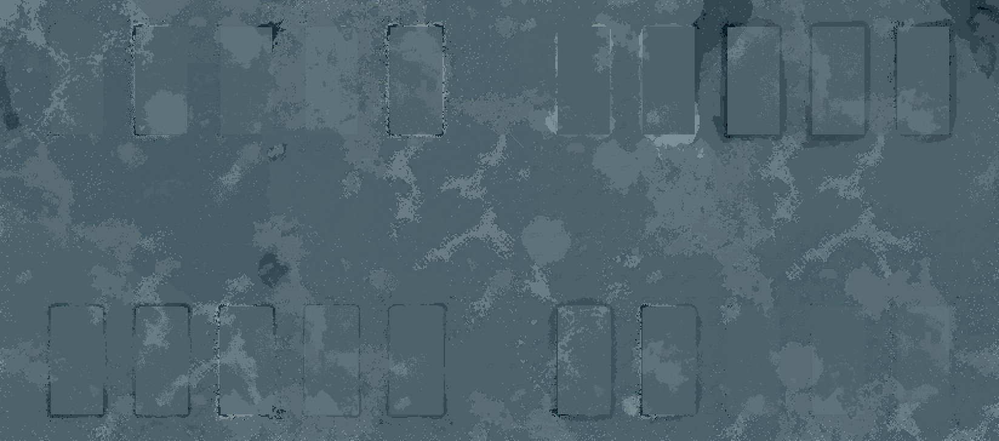
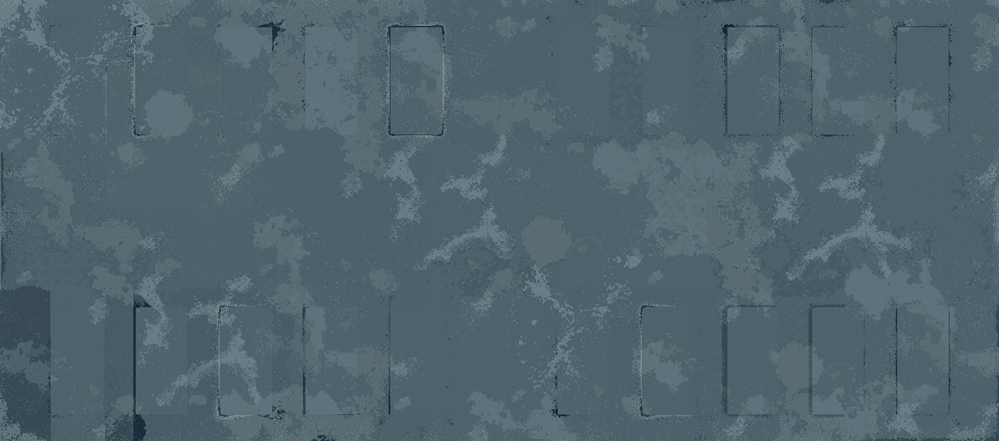
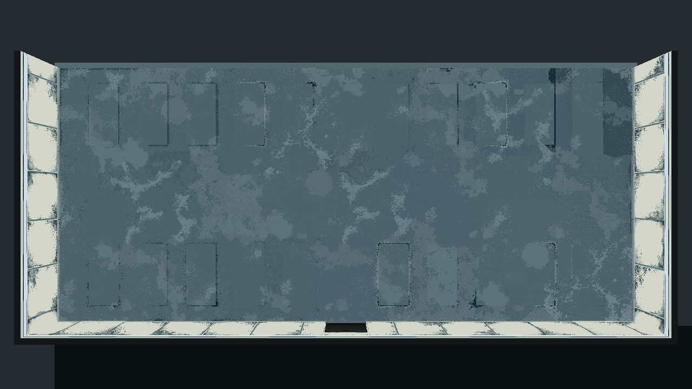
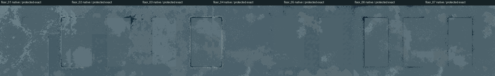
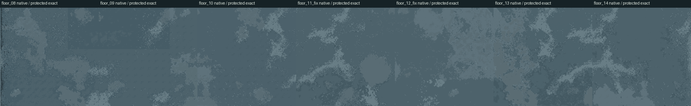
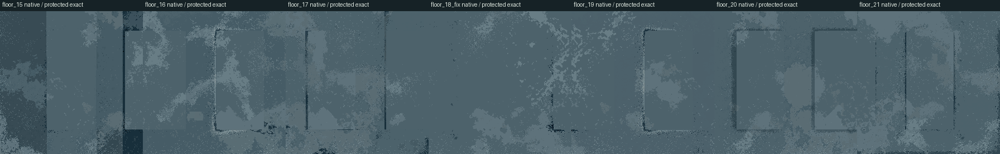

Room 1 · 全地坪细节与差分 r26
按已认可 C 版推广全地板：21份不同位置的原生PixelLab原图，连续蓝灰地坪，不加接缝、路线或新漏液。C作为完成度参考，其所在区域也由PixelLab统一接回全室，原C保留作对照；墙面固定r24，模型、布局、舱、门和灯均保持。
范围与制作记录 · 地板Aseprite母版 · Blender源 · 素材检查 · 场景不变性
同一机位、1280×720、曝光与GI。A只有原C小区域为细节版，其余地坪是r22；B为全地坪r26。正常暗光会压低色差，床脚与原色诊断可补看像素过渡。
同机位并排
A 基线 B 全地板
B 全地板
原生全图、差分原图与原色诊断
这是技术材料检查。舱底保护区仍为旧像素，隐藏模型后会显出占位轮廓；带GI的无遮挡图还保留原烘焙投影。正常游戏图保留全部舱体，用于判断实际可见接触。
A 地坪颜色图
B 地坪颜色图
B 全地坪原色／无遮挡诊断
后部位置原生差分（保护区域显示原像素）
中部位置原生差分
前部位置原生差分
原始／降噪光照与验证记录
沿用r19同套GI作材质对比，本轮没有重烘间接反弹。截图检查 · 相机与状态记录 · PixelLab实际来源。本轮实际使用 290 generations，含弃用和返修；整室美术仍供用户审查。